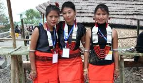

Moyer Tusk
The geometrical zigzag pattern on this blue cloth gives a classy look to this traditional dress of Nagaland. Though this dress has undergone several modifications for centuries, the original pattern was dyed deep blue. This zigzag pattern at the edges elevates the overall glimpse of the fabric. If this cloth is paired with fashionable jewellery, it gives a graceful look.